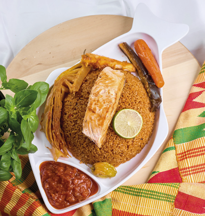

.png "logo")
Fondé par Koumba NIANGHANE, maman de 3 enfants,
passionnée par l’alimentation et le bien-être,
AFRISSAINES, est le fruit d’une reconversion après plus
de quinze ans dans la fonction publique.
Consciente de l’impact de l’alimentation sur la santé,
elle a décidé de faire de sa passion une activité.
Inspirée par ses grands-mères agricultrices, qui lui ont
transmis des valeurs profondes de respect, d’authenticité et
de gratitude envers la nature, Koumba a créé AFRISSAINES
avec une conviction forte : “Les alimentations africaines
ne peuvent se réduire à des préjugés; nourrissantes,
savoureuses et durables, elles n’ont rien à envier aux
autres cuisines du monde.”
AFRISSAINES est né pour offrir une image des cuisines africaines, authentique et équilibrée mettant en valeur les richesses culinaires de l’Afrique de l’Ouest tout en répondant aux exigences nutritionnelles modernes. Il ne s’agit pas uniquement d’une solution de restauration, c’est un mouvement, qui valorise le patrimoine culinaire africain tout en faisant la promotion d’une alimentation équilibrée et accessible à tous.
